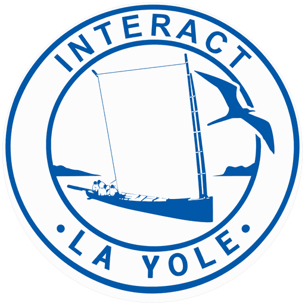

Des jeunes du François, de douze à dix-huit ans, qui choisissent eux-mêmes leurs actions et les mènent jusqu'au bout. Charté le 14 février 2023, sous le parrainage du Rotary Club du François.
Interact est le programme du Rotary International destiné aux jeunes de douze à dix-huit ans. Un club Interact n'est pas une section de jeunes rattachée à un club d'adultes : c'est un club à part entière, qui élit son bureau, choisit ses projets, gère son budget et rend compte de son action.
Le Rotary club parrain — ici le Rotary Club du François — met à disposition son expérience, son réseau et un accompagnement. Il ne décide pas à la place des jeunes. Cette distinction fait toute la valeur formatrice de l'engagement : on n'apprend pas à conduire un projet en exécutant celui d'un autre.
Chaque club Interact s'engage à mener au moins deux actions par an : l'une au service de sa communauté proche, l'autre tournée vers l'international. Cette double exigence est constitutive du programme depuis son origine.
Le bureau est élu par les membres. Les projets sont choisis, budgétés et conduits par eux. Le club parrain conseille et garantit, il n'arbitre pas.
Deux actions au minimum chaque année : une pour la commune, une tournée vers l'international. Des actions réelles, avec des bénéficiaires réels.
Interact existe dans près de 160 pays. Un jeune du François peut correspondre et monter un projet avec un club de la Caraïbe, d'Europe ou d'Afrique.
Le premier club Interact voit le jour le 5 novembre 1962, au lycée de Melbourne, en Floride. Le Rotary International cherchait alors une formule permettant aux adolescents de servir leur communauté sans être encadrés comme des enfants. Le nom lui-même dit le projet : Inter pour international, act pour action.
Soixante ans plus tard, le programme rassemble des milliers de clubs répartis sur presque tous les continents. Il reste l'un des rares cadres où des mineurs disposent d'un budget, d'une gouvernance élue et d'une responsabilité pleine sur leurs projets.
Le club Interact « La Yole » a été charté le 14 février 2023, sous la présidence d'Astrid BAPTE, membre et présidente fondatrice. Il est placé sous le parrainage du Rotary Club du François.
Le nom n'a pas été choisi au hasard. La yole ronde est l'embarcation traditionnelle de la Martinique : sans quille, elle ne tient debout que par l'équilibre de son équipage, arc-bouté sur les bois dressés. Elle ne va vite que si chacun tient sa place et compte sur les autres. Le fanion du club en porte l'image, sous le vol d'une frégate, au-dessus des fonds blancs.
Sans détour : un club Interact demande du temps et de la constance. Voici ce qu'il rend en échange.
Définir un objectif, établir un budget, répartir les rôles, tenir un calendrier, rendre compte. Des savoir-faire qui ne s'apprennent pas en classe, et qui se voient sur un dossier d'orientation.
Présenter son projet devant le club parrain, défendre un budget, animer une réunion. La confiance vient de la pratique, pas des conseils.
Correspondre avec des clubs Interact d'autres pays, participer aux rencontres du District 7030, découvrir que les mêmes questions se posent partout.
Le club délivre une attestation de membre Interact et des attestations de participation, signées du Président du Rotary Club du François. Elles valent pour un dossier d'orientation ou une candidature.
À dix-huit ans, un Interactien peut rejoindre un club Rotaract, puis le Rotary. Beaucoup de Rotariens ont commencé là.
Les actions ne sont pas des exercices. Les paniers distribués sont mangés, les fournitures scolaires servent, les bénéficiaires existent.
Les actions menées par « La Yole », seule ou avec le club parrain.
Le responsable de la commission Jeune Génération publie les actions du club depuis l'espace membre, avec les photos des Interactiens dont la famille a autorisé la publication.
Réunions, actions et rencontres à venir. Ce calendrier est ouvert à tous : membres du Rotary, Interactiens, familles et visiteurs.
| Date | Rendez-vous | Lieu | Pour qui |
|---|---|---|---|
| Le calendrier se remplit depuis l'espace membre du club. | |||
Le club est ouvert aux jeunes de douze à dix-huit ans, scolarisés au François ou aux alentours. Aucune condition de résultats scolaires, aucune cotisation dissuasive : il faut de l'envie et de la régularité.
Vos coordonnées ne servent qu'à traiter votre demande. Elles ne sont ni cédées ni utilisées à d'autres fins.
Chaque mois, les actions du club, le thème rotarien du moment et les rendez-vous à venir, directement dans votre boîte aux lettres. Un courriel par mois, pas davantage.